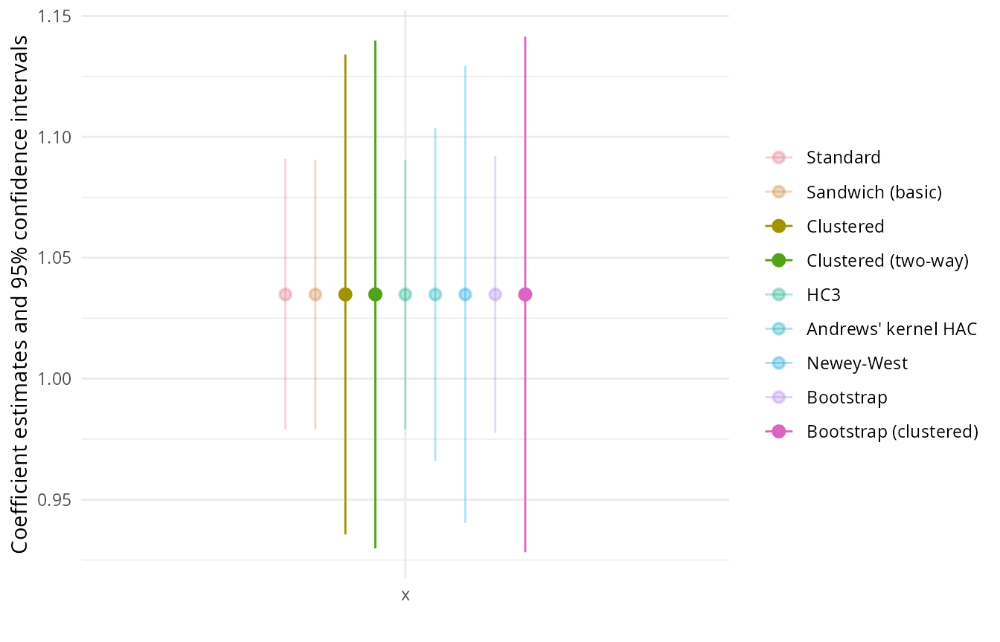

sandwich.RmdThe sandwich package is designed for obtaining covariance matrix estimators of parameter estimates in statistical models where certain model assumptions have been violated. More specifically, the estimators are useful in a situation where the model’s score function was correctly specified (e.g., the mean function in a linear regression model) but that the remaining likelihood was potentially misspecified (e.g., due to heteroscedasticity or a lack of independence). In this case, the usual parameter estimates are still consistent but the associated covariance matrix estimate is not, thus potentially biasing the inference such as parameter tests or confidence intervals. Luckily, there are covariance matrix estimators that are consistent under these misspecifications and that can simply be plugged in to the usual inference based on the central limit theorem. Because the covariance matrix estimators are a product of two outer “bread” matrices (based on the Hessian of the log-likelihood) and an innter “meat” matrix (based on cross-products of the corresponding score function), they are also known as “sandwich” covariances.
The sandwich package provides a wide range of such sandwich
covariances in an object-oriented framework. This means that it takes
the models fitted by another package without any modification or
adjustment, extracts certain quantities from them, and computes the
different covariance matrices based on these. For sandwich to
work the model class has to provide at least an estfun()
method for extracting the score matrix (containing the gradient
contributions per observation) and a bread() method for
extracting the inverse of some estimate of the Fisher information (that
most of the “usual” covariances are based on). Some sandwich covariances
also need further methods, e.g., model.matrix() or
hatvalues() etc. The covariances provided are:
sandwich() for cross-section data.vcovHC() for heteroscedasticity-consistent (HC)
covariances in (generalized) linear models.vcovHAC() for heteroscedastiticy- and
autocorrelation-consistent (HAC) covariances in time series data with
convenience interfaces kernHAC() (Andrews’ kernel HAC
estimator), NeweyWest(), and weave() (weighted
empirical adaptive variance estimation by Lumley and Heagerty).vcovCL() for clustered covariances (including multiway
clustering).vcovPL() and vcovPC() for panel and
panel-corrected covariances.vcovOPG() for outer-product-of-gradients
covariances.vcovBS() for bootstrap covariances (with default method
and dedicated fast and more flexible methods for lm and
glm objects).These can be applied to many different model classes, including
lm, glm, survreg,
coxph, mlogit, polr,
hurdle, zeroinfl, ivreg,
betareg, and many more. (There are some exceptions, though,
not all covariances are applicable to all models).
The resulting covariances can be subsequently plugged in to various
functions for Wald-type inference, including coeftest(),
waldtest(), and coefci() from the lmtest
package or Anova(), Confint(),
S(), linearHypothesis(), and
deltaMethod() from car
package.
Several R packages can be used to create model summary tables or
visualizations based on the covariance and inference functions above. In
particular broom provides
a unified interface for collecting information about models, including a
method for coeftest() objects. Based on broom
several packages provide model summary tables with the modelsummary
package being particularly versatile, including a graphical
modelplot() to go along with the tabular
msummary().
The stable release version of sandwich is hosted on the Comprehensive R Archive Network (CRAN) at https://CRAN.R-project.org/package=sandwich and can be installed via
install.packages("sandwich")The development version of sandwich is hosted on R-Forge at https://R-Forge.R-project.org/projects/sandwich/ in a Subversion (SVN) repository. It can be installed via
install.packages("sandwich", repos = "https://R-Forge.R-project.org")The package development was accompanied by three publications in the Journal of Statistical Software, describing the initial HC and HAC implementation for linear models, the corresponding object-oriented extension, and the generalization to clustered and panel covariances, respectively.
To illustrate the functionality of the sandwich package
we employ a well-known data set that was created by Petersen for
benchmarking clustered standard errors. However, because the data is so
simple, we will use it here to illustrate all sorts of covariances (not
only clustered ones).
The data come from a simple linear regression of a response
y on an explanatory variable x, but the data
are clustered by firm (500 firms) and year (10
years). The data can be loaded and the model fitted by ordinary least
squares (OLS):
##
## Call:
## lm(formula = y ~ x, data = PetersenCL)
##
## Residuals:
## Min 1Q Median 3Q Max
## -6.761 -1.368 -0.017 1.339 8.678
##
## Coefficients:
## Estimate Std. Error t value Pr(>|t|)
## (Intercept) 0.0297 0.0284 1.05 0.3
## x 1.0348 0.0286 36.20 <2e-16 ***
## ---
## Signif. codes: 0 '***' 0.001 '**' 0.01 '*' 0.05 '.' 0.1 ' ' 1
##
## Residual standard error: 2.01 on 4998 degrees of freedom
## Multiple R-squared: 0.208, Adjusted R-squared: 0.208
## F-statistic: 1.31e+03 on 1 and 4998 DF, p-value: <2e-16The regression summary for a linear model uses the “usual” OLS
standard errors, assuming that the data are uncorrelated and
homoscedastic. The summary provides partial Wald tests for the
regression coefficients and also an over F test assessing all
the regressors, i.e., in this case equivalent to a t test of
x. To obtain the analogous tests and corresponding
confidence intervals using the basic “robust” sandwich covariance for
cross-section data we can combine sandwich with the
lmtest package:
library("sandwich")
library("lmtest")
coeftest(m, vcov = sandwich)##
## t test of coefficients:
##
## Estimate Std. Error t value Pr(>|t|)
## (Intercept) 0.0297 0.0284 1.05 0.3
## x 1.0348 0.0284 36.45 <2e-16 ***
## ---
## Signif. codes: 0 '***' 0.001 '**' 0.01 '*' 0.05 '.' 0.1 ' ' 1
coefci(m, vcov = sandwich)## 2.5 % 97.5 %
## (Intercept) -0.0259 0.0853
## x 0.9792 1.0905## Wald test
##
## Model 1: y ~ 1
## Model 2: y ~ x
## Res.Df Df F Pr(>F)
## 1 4999
## 2 4998 1 1329 <2e-16 ***
## ---
## Signif. codes: 0 '***' 0.001 '**' 0.01 '*' 0.05 '.' 0.1 ' ' 1Other covariances can be plugged in analogously, potentially passing
along further options for the covariance. For example, the clustered
covariance vcovCL() can be used with the clustering
variable firm as:
coeftest(m, vcov = vcovCL, cluster = ~ firm)##
## t test of coefficients:
##
## Estimate Std. Error t value Pr(>|t|)
## (Intercept) 0.0297 0.0670 0.44 0.66
## x 1.0348 0.0506 20.45 <2e-16 ***
## ---
## Signif. codes: 0 '***' 0.001 '**' 0.01 '*' 0.05 '.' 0.1 ' ' 1In the same way we can compute and compare many of the other estimators in the package. A selection, mostly just with the default settings, is provided here. First, the covarainces are computed and then the corresponding standard errors extracted (square root of the diagonal):
vc <- list(
"Standard" = vcov(m),
"Sandwich (basic)" = sandwich(m),
"Clustered" = vcovCL(m, cluster = ~ firm),
"Clustered (two-way)" = vcovCL(m, cluster = ~ firm + year),
"HC3" = vcovHC(m),
"Andrews' kernel HAC" = kernHAC(m),
"Newey-West" = NeweyWest(m),
"Bootstrap" = vcovBS(m),
"Bootstrap (clustered)" = vcovBS(m, cluster = ~ firm)
)
t(sapply(vc, function(x) sqrt(diag(x))))## (Intercept) x
## Standard 0.0284 0.0286
## Sandwich (basic) 0.0284 0.0284
## Clustered 0.0670 0.0506
## Clustered (two-way) 0.0651 0.0536
## HC3 0.0284 0.0284
## Andrews' kernel HAC 0.0437 0.0351
## Newey-West 0.0660 0.0482
## Bootstrap 0.0262 0.0292
## Bootstrap (clustered) 0.0651 0.0544This shows that due to the cluster-correlation in the data, the usual standard errors and cross-section covariances are much too small. In contrast, the different types of clustered standard errors are much larger and more appropriate here.
For creating publication-quality tables of the model summaries using
sandwich-based standard errors, we use the
msummary() function from the modelsummary package.
Similar to coeftest() this takes the unmodified
lm() object m along with a vcov
specification (starting from version 0.6.5 of the package). The latter
might be specified via a covariance extractor function, certain strings
(like "robust" or "HC3"), a clustering formula
(like ~ firm), or simply a covariance matrix. Given that we
already computed a list of covariance matrices vc above, we
simply use the list element with the clustered covariance:
## `modelsummary` 2.0.0 now uses `tinytable` as its default table-drawing
## backend. Learn more at: https://vincentarelbundock.github.io/tinytable/
##
## Revert to `kableExtra` for one session:
##
## options(modelsummary_factory_default = 'kableExtra')
## options(modelsummary_factory_latex = 'kableExtra')
## options(modelsummary_factory_html = 'kableExtra')
##
## Silence this message forever:
##
## config_modelsummary(startup_message = FALSE)
msummary(m, vcov = vc$Clustered, stars = TRUE)| (1) | |
|---|---|
| + p < 0.1, * p < 0.05, ** p < 0.01, *** p < 0.001 | |
| (Intercept) | 0.030 |
| (0.067) | |
| x | 1.035*** |
| (0.051) | |
| Num.Obs. | 5000 |
| R2 | 0.208 |
| R2 Adj. | 0.208 |
| AIC | 21151.2 |
| BIC | 21170.8 |
| Log.Lik. | -10572.604 |
| RMSE | 2.00 |
| Std.Errors | Custom |
The result is a nicely formatted table with content similar to the
verbatim output from the corresponding coeftest() call
above. (Note that in previous versions of msummary() the
vcov argument was called statistic_override
which is still supported for backward compatibility.)
Moreover, we can also easily produce such a model summary directly
from the coeftest() output including the modified standard
errors and test statistics. Even more nicely, this can also be done for
a list of objects. Therefore, we use lapply() below to
apply coeftest() always to the same model
x = m but with the different vcov matrices
from vc. The resulting list of coeftest()
objects can then be displayed directly with msummary().
| Standard | Sandwich (basic) | Clustered | Clustered (two-way) | HC3 | Andrews' kernel HAC | Newey-West | Bootstrap | Bootstrap (clustered) | |
|---|---|---|---|---|---|---|---|---|---|
| (Intercept) | 0.030 | 0.030 | 0.030 | 0.030 | 0.030 | 0.030 | 0.030 | 0.030 | 0.030 |
| (0.028) | (0.028) | (0.067) | (0.065) | (0.028) | (0.044) | (0.066) | (0.026) | (0.065) | |
| x | 1.035 | 1.035 | 1.035 | 1.035 | 1.035 | 1.035 | 1.035 | 1.035 | 1.035 |
| (0.029) | (0.028) | (0.051) | (0.054) | (0.028) | (0.035) | (0.048) | (0.029) | (0.054) | |
| Num.Obs. | 5000 | 5000 | 5000 | 5000 | 5000 | 5000 | 5000 | 5000 | 5000 |
| AIC | 31141.2 | 31141.2 | 31141.2 | 31141.2 | 31141.2 | 31141.2 | 31141.2 | 31141.2 | 31141.2 |
| BIC | 63714.1 | 63714.1 | 63714.1 | 63714.1 | 63714.1 | 63714.1 | 63714.1 | 63714.1 | 63714.1 |
Note that this includes a reduced list of summary statistics, e.g.,
no R-squared. This could be changed by adding the argument
save = TRUE in the lapply() call above. This
would save the full model object in addition to the
coeftest() output.
Finally, the different coefficients with corresponding confidence
intervals can be displayed using modelplot(mlist). In the
figure shown below we add some ggplot2-based customizations to
the plot: omit the display for the intercepts (i.e., only show the
x coefficients), flip the axes, and use a custom color
palette that highlights the confidence intervals based on the disfferent
clustered standard errors which are more appropriate for this data.
library("ggplot2")
pal <- hcl.colors(9, "Dark 3", alpha = c(0.3, 0.3, 1, 1, 0.3, 0.3, 0.3, 0.3, 1))
modelplot(mlist, coef_omit = "(Intercept)") + coord_flip() + scale_color_manual(values = pal)